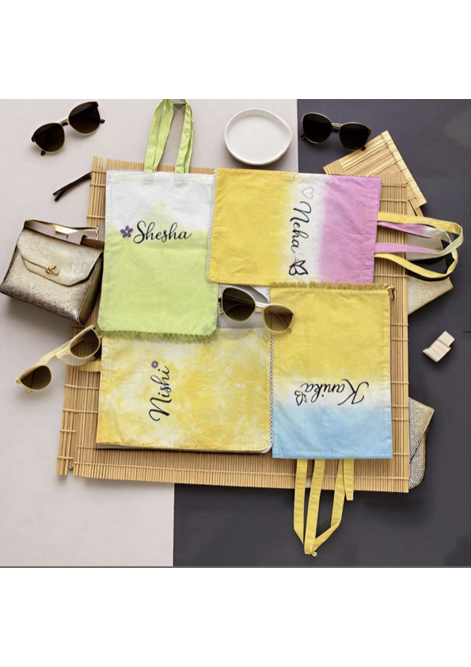

Amara Atelier
Colorful pieces with craft, softness, and unmistakable presence.
Amara is a lifestyle accessories brand built around hand-dyed totes, customizable scarves, expressive color stories, and elegant everyday gifting. Every piece is made to feel personal, wearable, and instantly memorable.
Totes and scarves
Boutique gifting
Custom order friendly

Brand Signature
Pastel luxury with handcrafted charm.
Soft gradients, custom naming, and a boutique presentation make each Amara piece feel special.
Signature Mood
Sun-washed totes and scarves for gifting, brunch edits, and easy day dressing.
Browse Totes & ScarvesWhy Customers Notice It
Amara pieces look personal, celebratory, and camera-ready from the first glance.
Ask About Custom OrdersBrand World
Amara is designed to be visible, memorable, and easy to love.
Totes & Scarves
The hero categories: hand-dyed cotton totes and customizable scarves in soft gradients, expressive colors, and boutique finishing details.
Gifting & Events
A natural fit for curated gift boxes, festive moments, bridesmaid edits, and personalized party favors.
Editorial Styling
The collection photographs beautifully, making it ideal for social drops, launches, and pop-up presentations.
Featured Pieces
Selected signatures from the latest Amara edit.
For Festive Gifting
Return gifts and intimate event edits with color, warmth, and identity.
For Everyday Carry
Easy totes and lightweight scarves that brighten simple outfits without feeling overstyled.
For Social Drops
Strong visual storytelling built for reels, flatlays, launch posts, and curated content.
House Notes
Text that gives Amara a stronger, more ownable brand voice.
“Amara is not about loud luxury. It is about charm, color, and the feeling of carrying something made with care.”
“Every palette is chosen to feel light, feminine, and a little celebratory, so the product becomes part of the mood.”
Ready To Browse